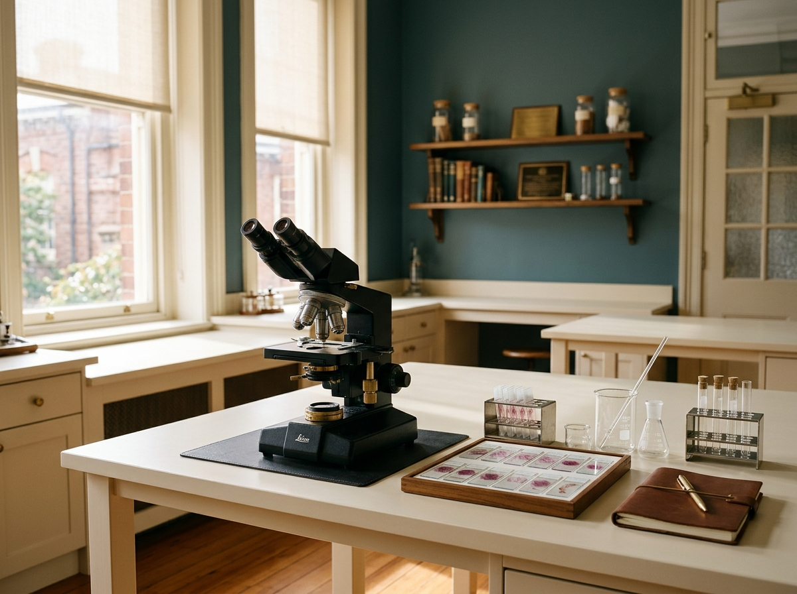

Four decades of diagnostic precision, personally overseen.
Routine blood work, preventive health checkups, and specialist histopathology, cytology, and FNAC — with unhurried answers to every question you have about your tests. Practising in Mahim since 1985, every report is personally reviewed and signed by Dr. Wilson Menezes.
Walk-in & phone booking, 8:00 AM – 7:00 PM Monday to Saturday. Call us directly for home sample collection, urgent fever panels, or FNAC appointments.

Easy morning draws & walk-in care
No call centres or confusing tokens. Walk into our ground-floor Mahim West laboratory, or call us the evening before to reserve an early morning home draw.
Clinic & Sample Collection
| Monday – Saturday | 8:00 AM – 7:00 PM |
| Fasting Blood Collection | 8:00 AM – 10:30 AM |
| Sunday | Closed |
Walk-in blood & urine samples accepted all day. Please call ahead for FNAC procedures.
Home Collection & Phone Desk
| Morning Home Visits | From 7:30 AM |
| Phone Booking Desk | 8:00 AM – 7:00 PM |
| Service Areas | Mahim · Dadar · Bandra |
Call our reception desk to book a morning home draw or confirm fasting instructions before your visit.
Investigations & Pathology Tests
Search by test name, symptom, or abbreviation (such as CBC, Lipid, Thyroid, or FNAC) to check sample requirements, fasting rules, and report turnaround times.
Thoughtful Health Checkup Panels
Clinically relevant preventive panels designed around what physicians actually need — without unnecessary filler tests. Ideal for annual reviews and senior citizens.

The reassurance of knowing who stands behind your report.
“A laboratory number is never just a figure on paper — it guides a family’s peace of mind and a physician’s clinical decision. It deserves direct medical attention.”
Dr. Wilson Menezes completed his M.D. in Pathology from Topiwala National Medical College (TNMC), Mumbai in 1985, earning First Rank in Mumbai University. Over the past four decades, his laboratory in Mahim West has served generations of Mumbai families, family physicians, and surgeons with dependable reporting across haematology, clinical biochemistry, histopathology, and fine needle aspiration cytology (FNAC).
- Qualification
- M.D. (Pathology), Topiwala National Medical College, Mumbai (1985)
- Academic Honour
- Ranked 1st in Mumbai University at M.D. Examinations (1985)
- Medical Registration
- Maharashtra Medical Council, Reg. No. 49541 (1983)
- Core Specialties
- Histopathology, Cytology, FNAC, Haematology & Clinical Biochemistry
Unhurried care built on forty years of trust
Many patients who walk into our Garden Colony clinic first came here with their parents decades ago. Here is why families and clinicians continue to rely on an independent, pathologist-led laboratory.
Visit the Laboratory
Conveniently situated in quiet Garden Colony off Soonawala Agiary Marg — easily accessible from Mahim Junction, Lady Jamshedji Road, and Cadell Road.
Dr. Wilson Menezes Pathology Lab
Shop No. C/1, Garden Colony,
Soonawala Agiary Marg, Behind Canossa High School,
Mahim West, Mumbai – 400016, Maharashtra
| Monday – Saturday | 8:00 AM – 7:00 PM |
| Fasting Blood Collection | From 8:00 AM onwards |
| Sunday | Closed |
Visiting our Mahim lab for the first time?
You do not need to work out all the details on your own — simply bring your doctor’s prescription along with any recent reports, or give us a quick call and we will guide you on fasting, timing, and everything else.